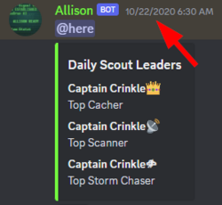

Triple Crown Club
The Triple Crown Club
At 11:30 UTC each day, Signaleers are recognized as the Daily Scout Leaders by the Allison bot in the #members-lounge channel of our Discord server. Thanks to Sky Diamond, Allison bot tracks the:
- Top Cacher üëë - most tending/sowing cache actions in the previous 24 hours
- Top Thera Scanner üì° - most Thera wormhole submissions in the previous 24 hours
- Top Turnur Scanner üõ∞Ô∏è - most Turnur wormhole submissions in the previous 24 hours
- Top Storm Chaser üåßÔ∏è - most new metaliminal storm reports in the previous 24 hours
What is the Triple Crown?
In order to achieve the arduous yet prestigious Triple Crown, a Signaleer must simultaneously be the Top Cacher, the Top Scanner (Thera or Turnur), and the Top Storm Chaser within the SAME 24 hour time period (aka downtime to downtime). A rare feat indeed! ü¶Ñ
What if I get ALL FOUR?!
If you are the Top Cacher, Top Thera Scanner, Top Turnur Scanner, and Top Storm Chaser within the same 24 hour period, well, we'll just have to invent a new club for you! Is it even possible? You never know until you try...
How to join the Triple Crown Club?
Post your screenshot in this Discord forum thread of your Triple Crown WITH the timestamp visible. Easy, right? üòâ
Example:

{kind=link}
Also, if you like, please include some tips/tricks of how you achieved your Triple Crown in order to help other Signaleers attain this elite club membership. By doing so, you’ll help us all become more knowledgeable, skilled, and efficient at serving the New Eden community.
In-Game Medal for Triple Crown Club Membership
Signaleer Triple Crown: Awarded to Signaleers who achieve the arduous yet prestigious Triple Crown by simultaneously being the Top Rescue Cacher, the Top Scanner (Thera or Turnur), and the Top Storm Chaser within the same 24-hour period.
{kind=link}
Triple Crown Club Membership Roster
| Signaleer | Join Date | # of Triple Crowns | Notes |
|---|---|---|---|
| Captain Crinkle | 10/22/2020 | 3 | a Triple Crown three-peat! |
| Tekufah | 10/3/2021 | 8 | the exceedingly rare Octuplet Triple! |
| Renek Dallocort | 7/7/2022 | 3 | a Triple Crown three-peat! |
| Azamex | 11/12/2022 | 1 | |
| Arachnis | 5/31/2023 | 1 | |
| Kyr Thellere | 7/5/2023 | 1 |
Note: Please see our old EvE-Scout Forum thread for pre-Discord Membership Roster documentation.
Previous In-Game Medal (now retired)
Triple Crown of the Cluster: Awarded to Signaleers who achieve the arduous yet prestigious Triple Crown by simultaneously being the Top Rescue Cacher, Top Scanner, and Top Storm Chaser within the same 24-hour period.
{kind=link}
This medal was retired when the Triple Crown Club expanded to include Turnur. All Triple Crown members that joined prior to 12/16/2023 were awarded the Triple Crown of the Cluster medal.
Changelog
- 12/16/2023: Updated info to include Turnur.
- 1/22/2024: Updated info to include the new in-game medal - Signaleer Triple Crown.